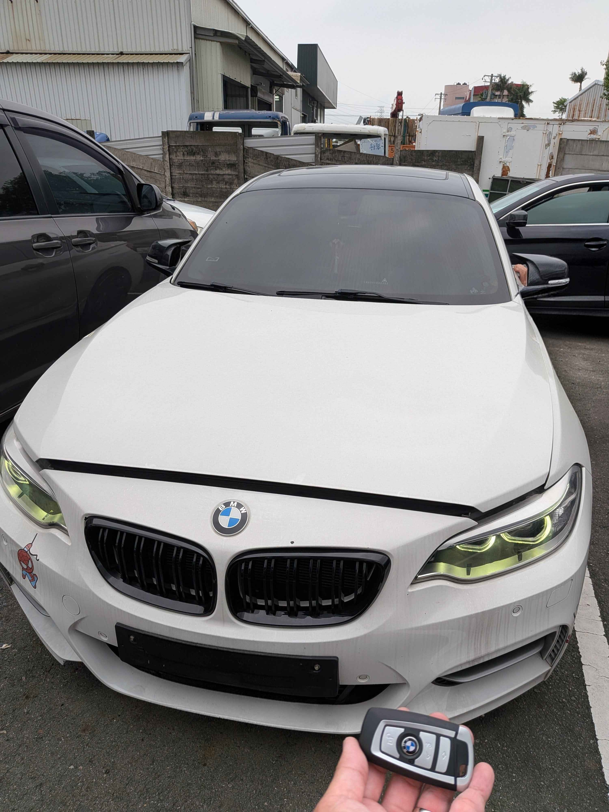

Field Report
2026.04.17
2015 BMW 220i (F22)
智能鑰匙全丟：現地數據重構紀錄
雲林斗南現地救援：攻克 FEM 系統全丟匹配難題。

Mission Background
本次任務位於雲林斗南。一台 2015 年式的 BMW 220i (F22)，因車主鑰匙全數遺失導致車輛完全鎖死。此車型搭載 BMW F 世代核心的 FEM (Front Body Electronics Module) 防盜架構，在全丟狀態下，傳統方式往往需要漫長的等待與昂貴的模組更換。
PlatformF-Series
SystemFEM
Location雲林斗南
StatusSuccess
Technical Execution
極致核心 ProCore 團隊抵達現場後，立即啟動高階診斷與數據採集程序：
- 數據採集： 安全提取 FEM 模組內的關鍵防盜數據。
- 預處理運算： 針對 FEM 系統進行精準的數據重構與校驗。
- 鑰匙生成： 現場匹配原廠規格智能感應鑰匙。
- 功能測試： 確保一鍵啟動、遙控功能及舒適進入完全同步。
整個救援過程直接於車主停車處完成，無需拖車，成功為客戶節省大量時間與成本。